This report compares the synthetic population and modelled travel demand for the Greater Braunschweig region (8 districts) against Census 2022, the BA commuter atlas, and MiD 2023. Sample size 25 % (284,633 synthetic persons).
For each district the expanded synthetic population (sample × 4) is compared against the DESTATIS Census 2022.
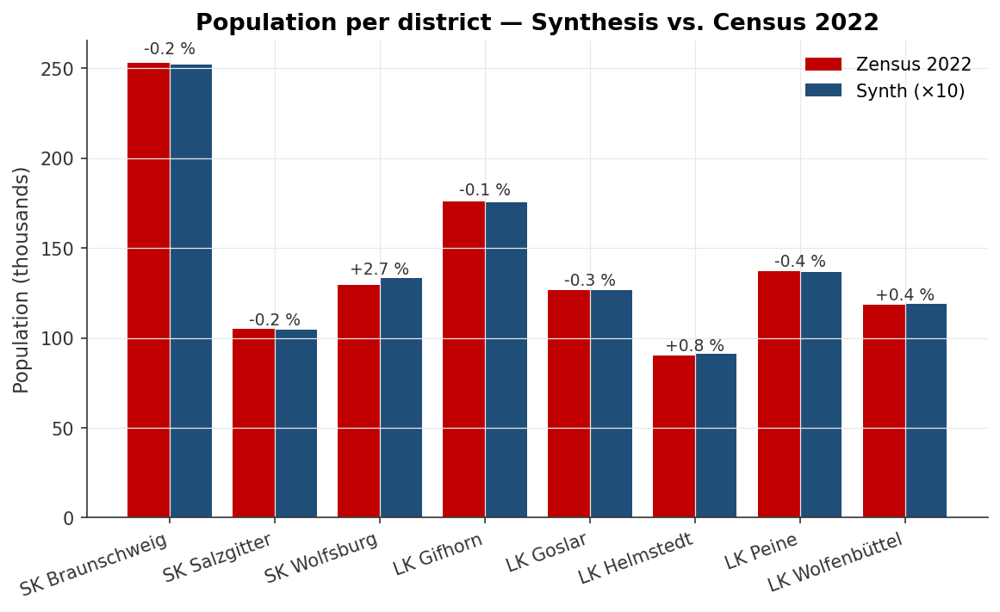
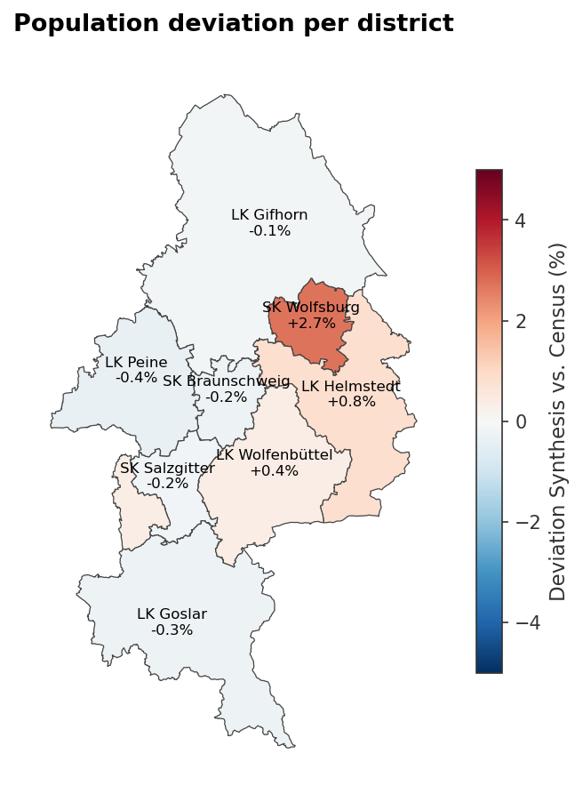
| ars5 | kreis_name | zensus_2022 | synth_sample | synth_expanded | deviation_pct |
|---|---|---|---|---|---|
| 03101 | SK Braunschweig | 252962 | 63085 | 252340 | -0.25 |
| 03102 | SK Salzgitter | 104970 | 26192 | 104768 | -0.19 |
| 03103 | SK Wolfsburg | 129560 | 33274 | 133096 | +2.73 |
| 03151 | LK Gifhorn | 175943 | 43920 | 175680 | -0.15 |
| 03153 | LK Goslar | 126775 | 31612 | 126448 | -0.26 |
| 03154 | LK Helmstedt | 90227 | 22744 | 90976 | +0.83 |
| 03157 | LK Peine | 137045 | 34129 | 136516 | -0.39 |
| 03158 | LK Wolfenbüttel | 118290 | 29677 | 118708 | +0.35 |
| TOTAL | ZGB-8 | 1135772 | 284633 | 1138532 | +0.24 |
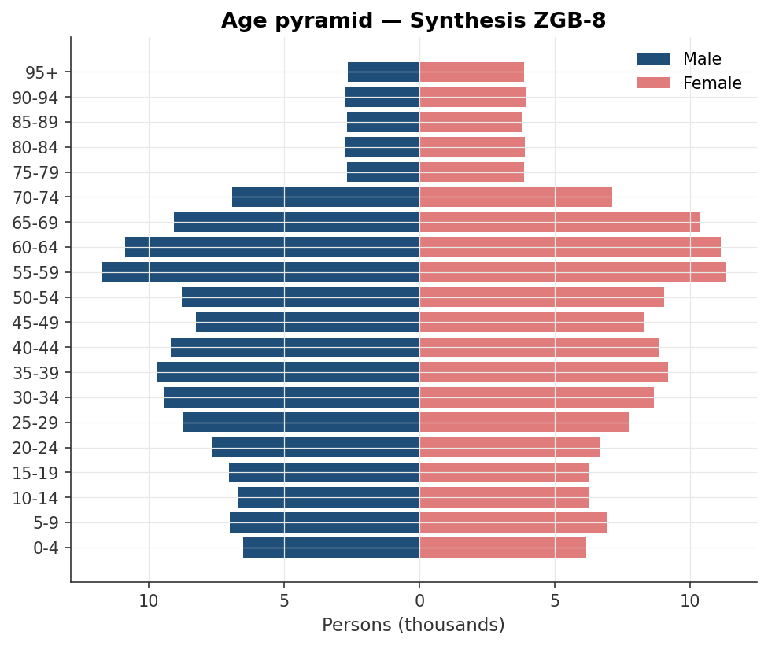
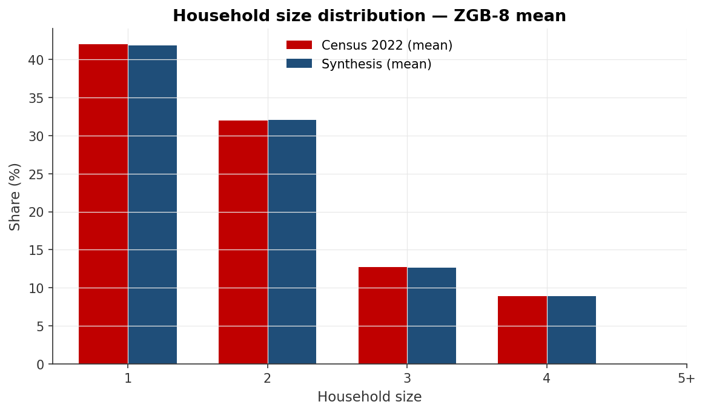
| ars5 | size_bin | synth_count | synth_share | zensus_share | deviation_pp |
|---|---|---|---|---|---|
| 03101 | 1 | 17,473 | 0.509 | 0.512 | -0.30 |
| 03101 | 2 | 9,844 | 0.287 | 0.287 | -0.03 |
| 03101 | 3 | 3,538 | 0.103 | 0.101 | +0.16 |
| 03101 | 4 | 2,425 | 0.071 | 0.071 | -0.02 |
| 03101 | 5 | 714 | 0.021 | 0.020 | +0.04 |
| 03101 | 6 | 340 | 0.010 | 0.000 | +0.99 |
| 03101 | 6+ | 0 | 0.000 | 0.008 | -0.83 |
| 03102 | 1 | 5,550 | 0.435 | 0.438 | -0.33 |
| 03102 | 2 | 3,901 | 0.306 | 0.306 | -0.03 |
| 03102 | 3 | 1,485 | 0.116 | 0.116 | +0.07 |
| 03102 | 4 | 1,073 | 0.084 | 0.085 | -0.10 |
| 03102 | 5 | 437 | 0.034 | 0.033 | +0.08 |
| 03102 | 6 | 318 | 0.025 | 0.000 | +2.49 |
| 03102 | 6+ | 0 | 0.000 | 0.022 | -2.18 |
| 03103 | 1 | 7,255 | 0.442 | 0.453 | -1.11 |
| 03103 | 2 | 4,827 | 0.294 | 0.291 | +0.34 |
| 03103 | 3 | 1,986 | 0.121 | 0.121 | +0.00 |
| 03103 | 4 | 1,544 | 0.094 | 0.091 | +0.32 |
| 03103 | 5 | 497 | 0.030 | 0.029 | +0.08 |
| 03103 | 6 | 291 | 0.018 | 0.000 | +1.77 |
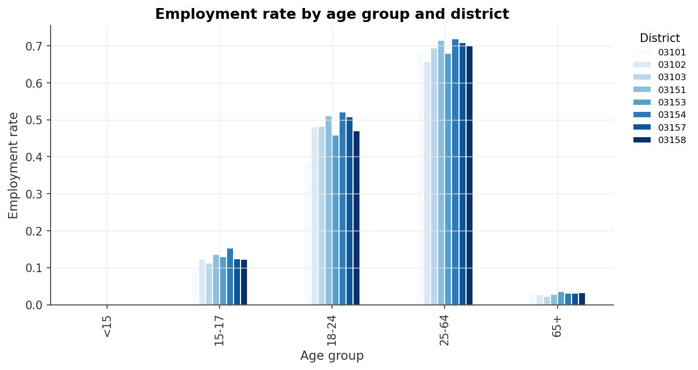
Commute trips are analysed as the crow-fly distance between home and primary workplace (eqasim {commutes.gpkg}).
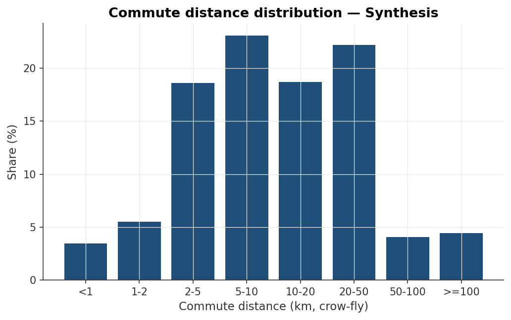
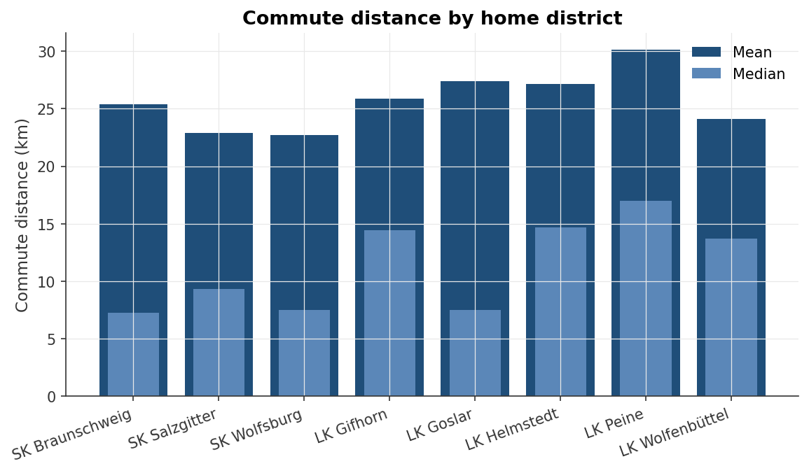
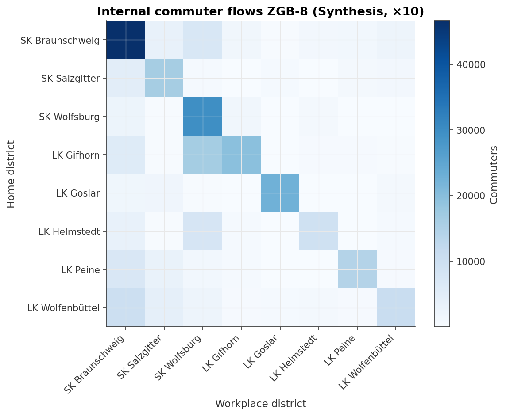
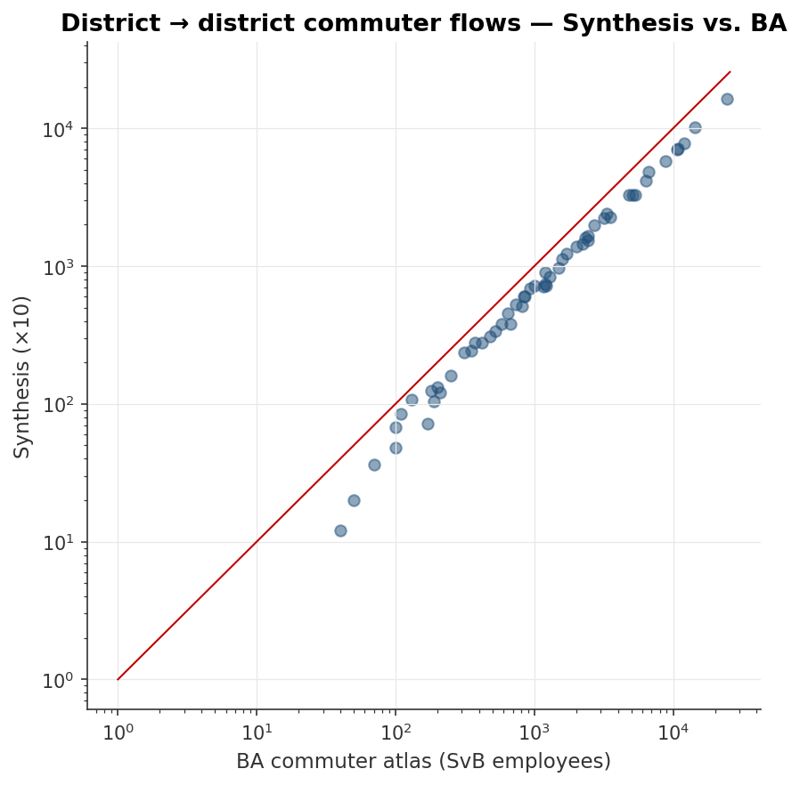
| ars5 | n_commuters | mean_km | median_km | p90_km | mid_mean_km | deviation_km | deviation_pct |
|---|---|---|---|---|---|---|---|
| 03101 | 17765 | 25.41 | 7.26 | 45.17 | 19.10 | 6.31 | 33.02 |
| 03102 | 6976 | 22.88 | 9.30 | 43.79 | 13.70 | 9.18 | 67.00 |
| 03103 | 9437 | 22.70 | 7.50 | 28.97 | 18.40 | 4.30 | 23.35 |
| 03151 | 12151 | 25.87 | 14.41 | 44.88 | 20.80 | 5.07 | 24.39 |
| 03153 | 8490 | 27.41 | 7.48 | 59.64 | 29.40 | -1.99 | -6.78 |
| 03154 | 6185 | 27.14 | 14.70 | 39.66 | 18.50 | 8.64 | 46.70 |
| 03157 | 9254 | 30.11 | 16.98 | 44.94 | 22.60 | 7.51 | 33.25 |
| 03158 | 8127 | 24.10 | 13.71 | 40.51 | 18.00 | 6.10 | 33.91 |
| orig_ars | dest_ars | synth_flow | synth_flow_expanded | ba_flow | deviation_pct |
|---|---|---|---|---|---|
| 03151 | 03103 | 4,111 | 16,444 | 24,410 | -32.6 |
| 03158 | 03101 | 2,542 | 10,168 | 14,240 | -28.6 |
| 03154 | 03103 | 1,957 | 7,828 | 11,960 | -34.5 |
| 03101 | 03103 | 1,789 | 7,156 | 10,790 | -33.7 |
| 03157 | 03101 | 1,753 | 7,012 | 10,600 | -33.8 |
| 03151 | 03101 | 1,451 | 5,804 | 8,740 | -33.6 |
| 03157 | 03241 | 0 | 0 | 8,600 | -100.0 |
| 03102 | 03101 | 1,202 | 4,808 | 6,640 | -27.6 |
| 03158 | 03102 | 1,037 | 4,148 | 6,350 | -34.7 |
| 03101 | 03102 | 823 | 3,292 | 5,330 | -38.2 |
| 03154 | 03101 | 825 | 3,300 | 5,060 | -34.8 |
| 03157 | 03102 | 815 | 3,260 | 4,820 | -32.4 |
| 03101 | 03241 | 0 | 0 | 3,540 | -100.0 |
| 03101 | 03158 | 562 | 2,248 | 3,520 | -36.1 |
| 03103 | 03101 | 597 | 2,388 | 3,330 | -28.3 |
| 03241 | 03101 | 0 | 0 | 3,300 | -100.0 |
| 03241 | 03103 | 0 | 0 | 3,290 | -100.0 |
| 15085 | 03153 | 0 | 0 | 3,280 | -100.0 |
| 15083 | 03103 | 0 | 0 | 3,280 | -100.0 |
| 15083 | 03154 | 0 | 0 | 3,270 | -100.0 |
All-purpose trips from the MATSim selected plan (modes extracted from {population.xml.gz}). Reference: MiD 2023 Greater Braunschweig.
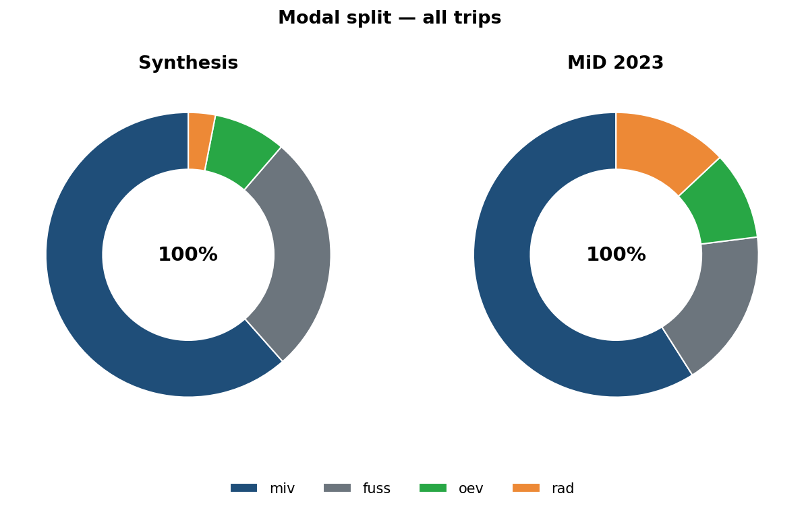
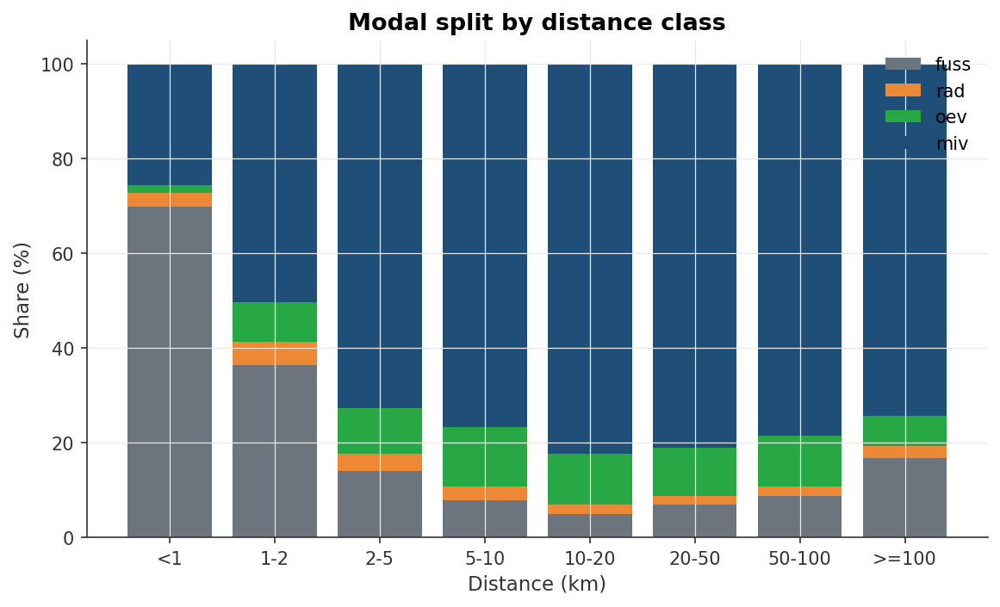
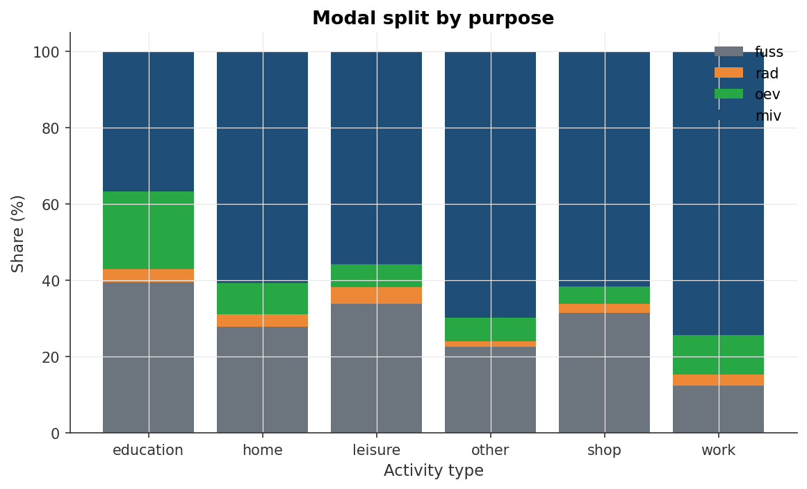
| mode | synth_share | mid_share | deviation_pp |
|---|---|---|---|
| miv | 0.615 | 0.590 | +2.51 |
| fuss | 0.272 | 0.180 | +9.18 |
| oev | 0.083 | 0.100 | -1.75 |
| rad | 0.031 | 0.130 | -9.94 |
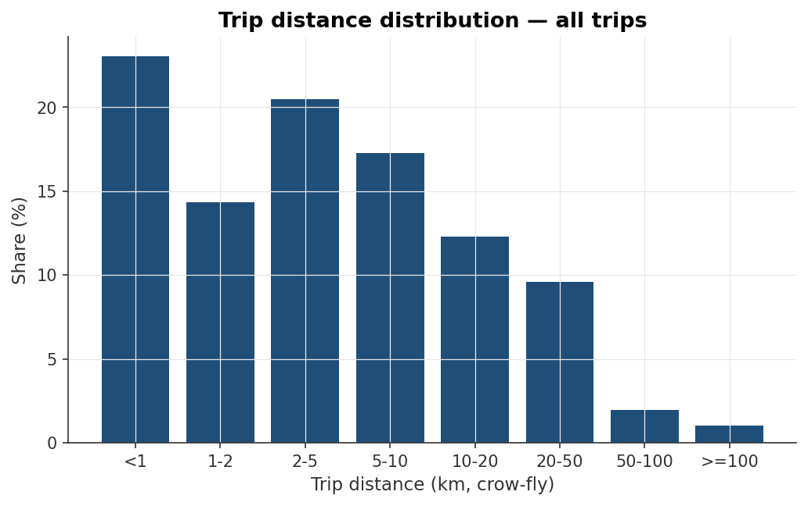
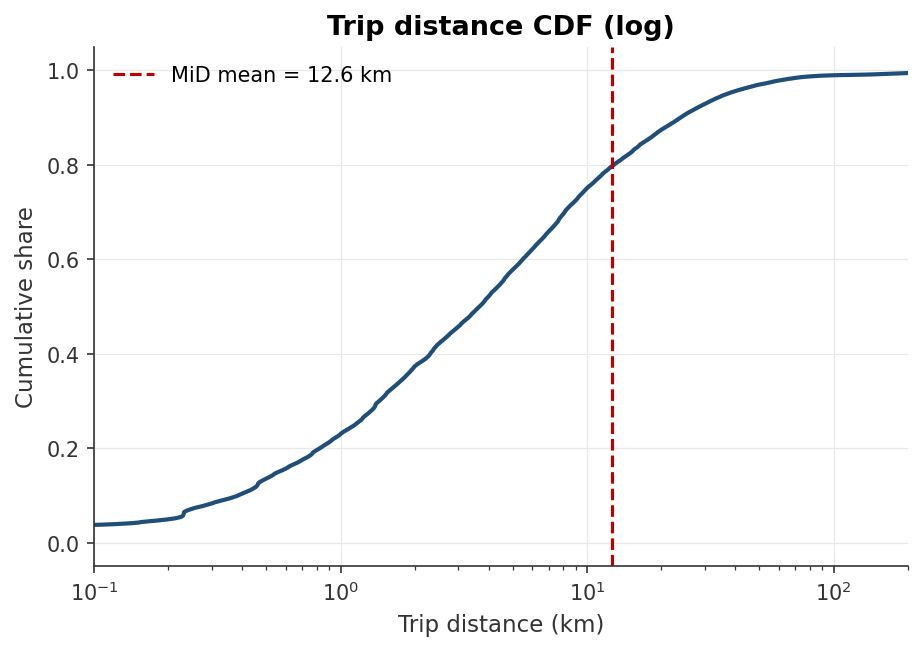
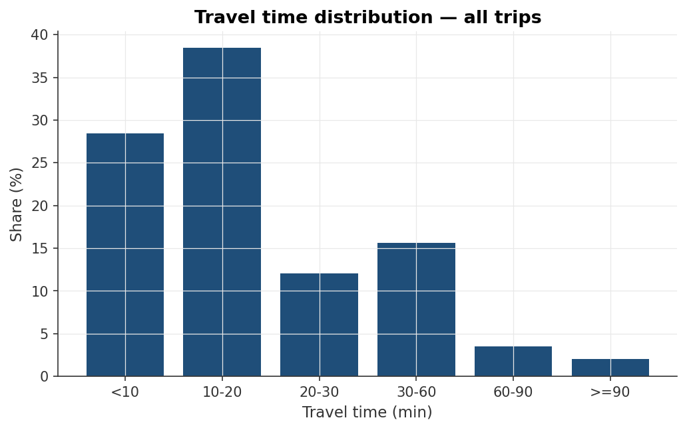
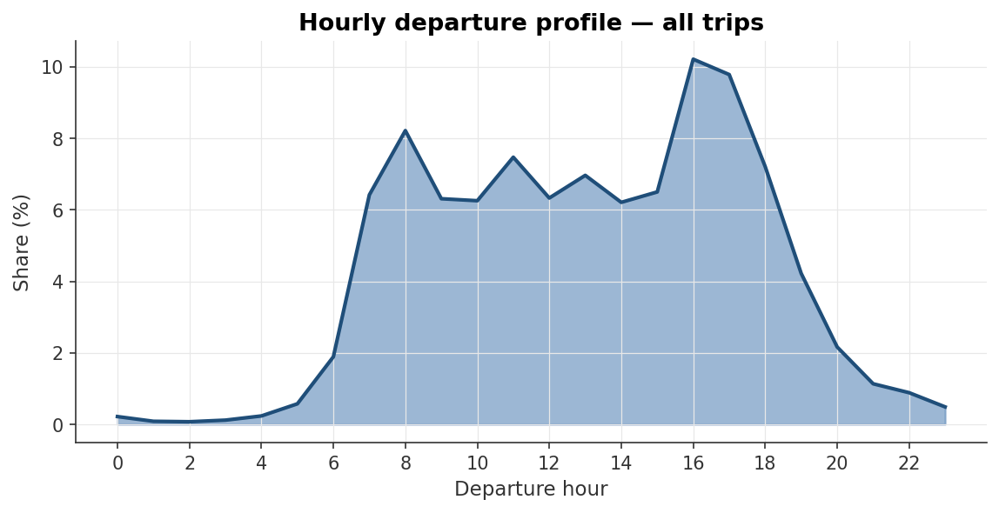
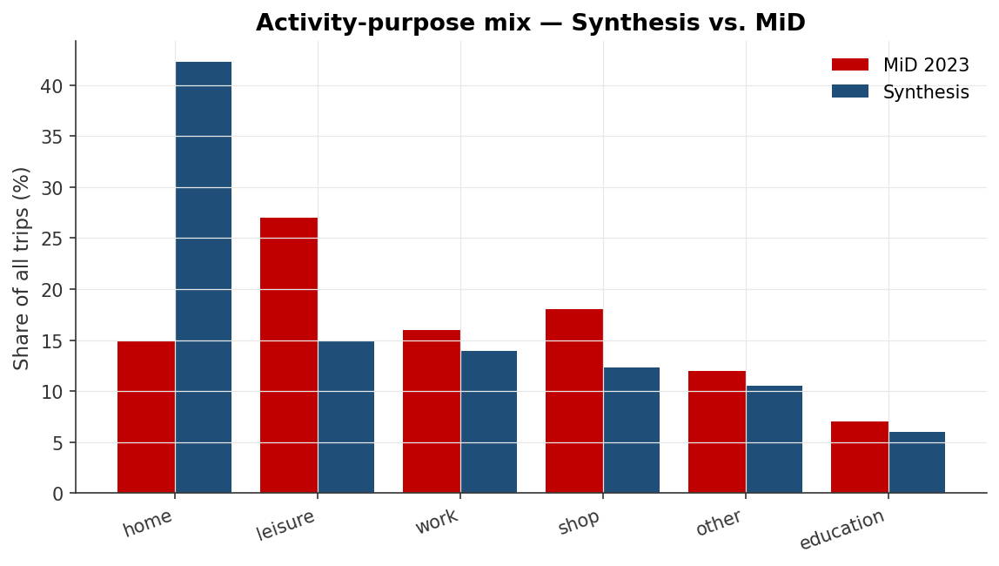
| purpose | synth_share | mid_share | deviation_pp |
|---|---|---|---|
| leisure | 0.256 | 0.270 | -1.39 |
| work | 0.231 | 0.160 | +7.06 |
| shop | 0.220 | 0.180 | +3.96 |
| other | 0.176 | 0.120 | +5.60 |
| education | 0.111 | 0.070 | +4.07 |
| home | 0.007 | 0.150 | -14.30 |
Quantitative fit indicators used to track refactor progress (R-A gravity, R-C household size, R-D purpose remap). Targets are deliberately conservative; bicycle / walk are documented residuals because the mode-choice utility re-estimation (R-E) is deferred.
| KPI | Value | Tolerance | Status |
|---|---|---|---|
| ZGB-8 population vs Zensus 2022 (% deviation) | 0.24 | ≤ 2.00 | OK |
| Trips/person vs MiD (% deviation) | 0.44 | ≤ 10.00 | OK |
| Mean trip distance |Δ km| | 1.94 | ≤ 5.00 | OK |
| MIV share |Δ pp| | 2.51 | ≤ 5.00 | OK |
| ÖV share |Δ pp| | 1.75 | ≤ 5.00 | OK |
| Bike share |Δ pp| (R-E deferred) | 9.94 | ≤ 12.00 | OK |
| Walk share |Δ pp| (R-E deferred) | 9.18 | ≤ 12.00 | OK |
| OD top-200 R² (lower bound) | 0.881 | ≥ 0.85 | OK |
Top-200 Kreis-pairs by BA flow. n = 200, R² = 0.881, RMSE = 1,373, MAPE = 82.3%, Bias = -58.8%.
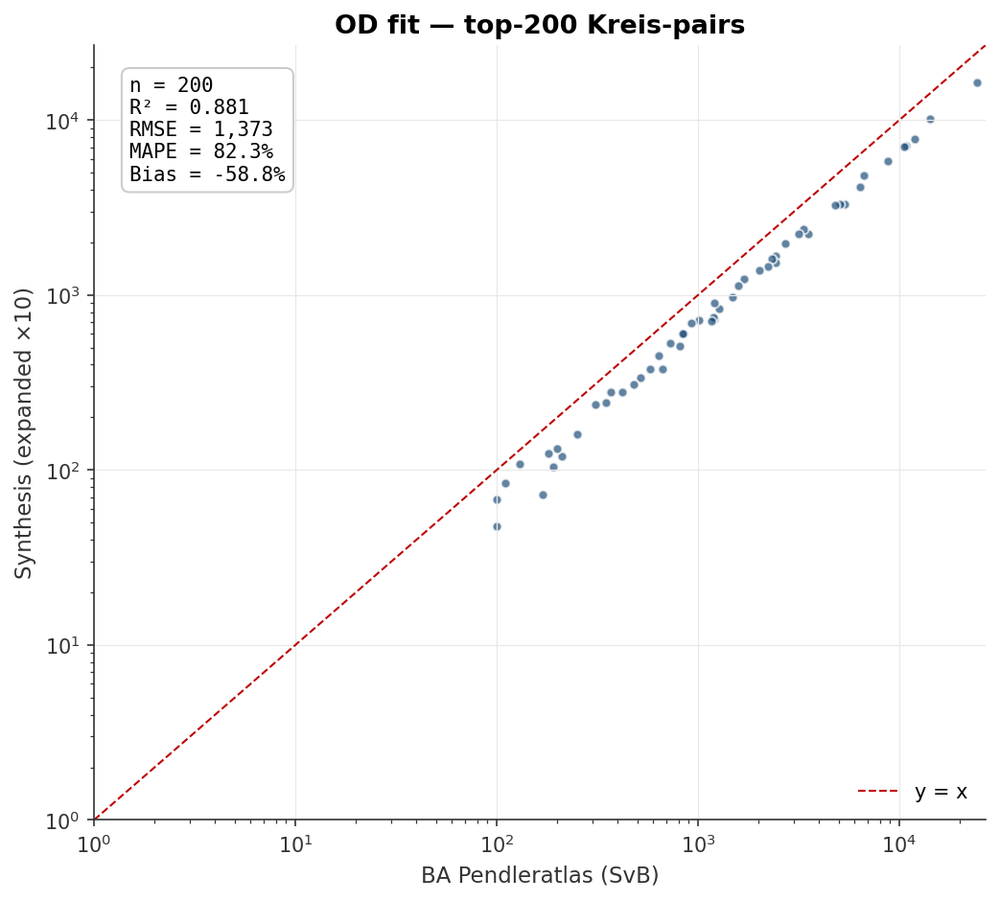
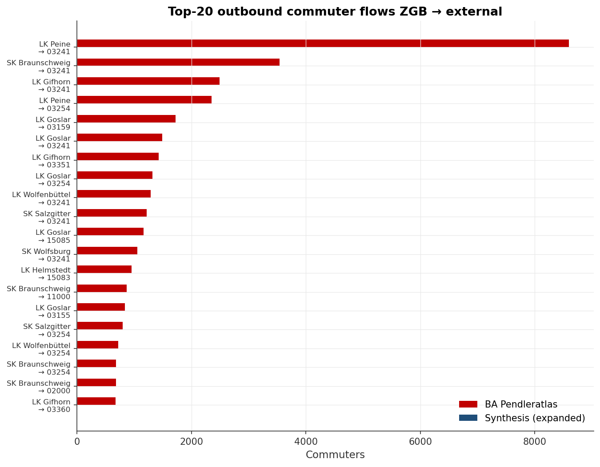
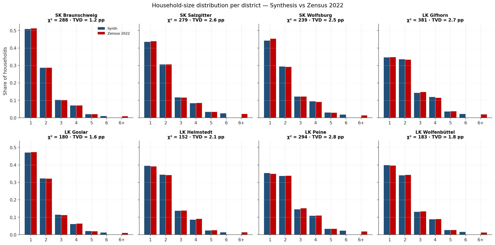
| ars5 | kreis_name | n_synth_hh | chi2 | dof | tvd_pp |
|---|---|---|---|---|---|
| 03157 | LK Peine | 15485 | 294 | 5 | 2.82 |
| 03151 | LK Gifhorn | 19708 | 381 | 5 | 2.71 |
| 03102 | SK Salzgitter | 12764 | 279 | 5 | 2.64 |
| 03103 | SK Wolfsburg | 16400 | 239 | 5 | 2.52 |
| 03154 | LK Helmstedt | 11139 | 152 | 5 | 2.05 |
| 03158 | LK Wolfenbüttel | 14471 | 183 | 5 | 1.81 |
| 03153 | LK Goslar | 16852 | 180 | 5 | 1.63 |
| 03101 | SK Braunschweig | 34334 | 288 | 5 | 1.19 |
eqasim assigns following_purpose = home on every return-home leg,
while MiD attributes the trip to the originating activity. Remapping
home → preceding_purpose brings the synth purpose mix close to MiD
without touching the synthesis itself — this is a reporting-only fix
(R-D).
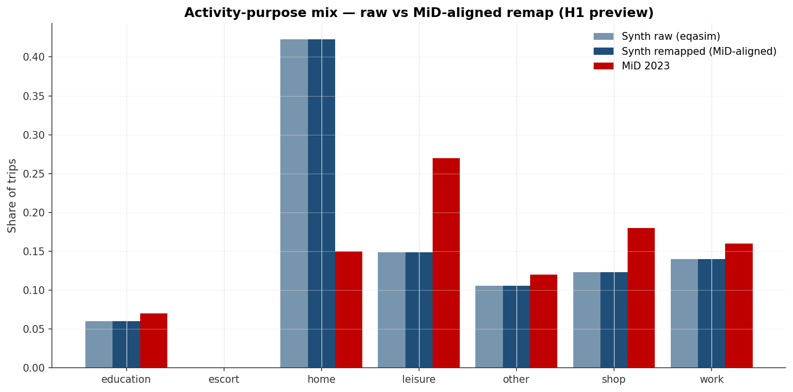
| purpose | synth_share | mid_share | deviation_pp |
|---|---|---|---|
| leisure | 0.256 | 0.270 | -1.39 |
| work | 0.231 | 0.160 | +7.06 |
| shop | 0.220 | 0.180 | +3.96 |
| other | 0.176 | 0.120 | +5.60 |
| education | 0.111 | 0.070 | +4.07 |
| home | 0.007 | 0.150 | -14.30 |